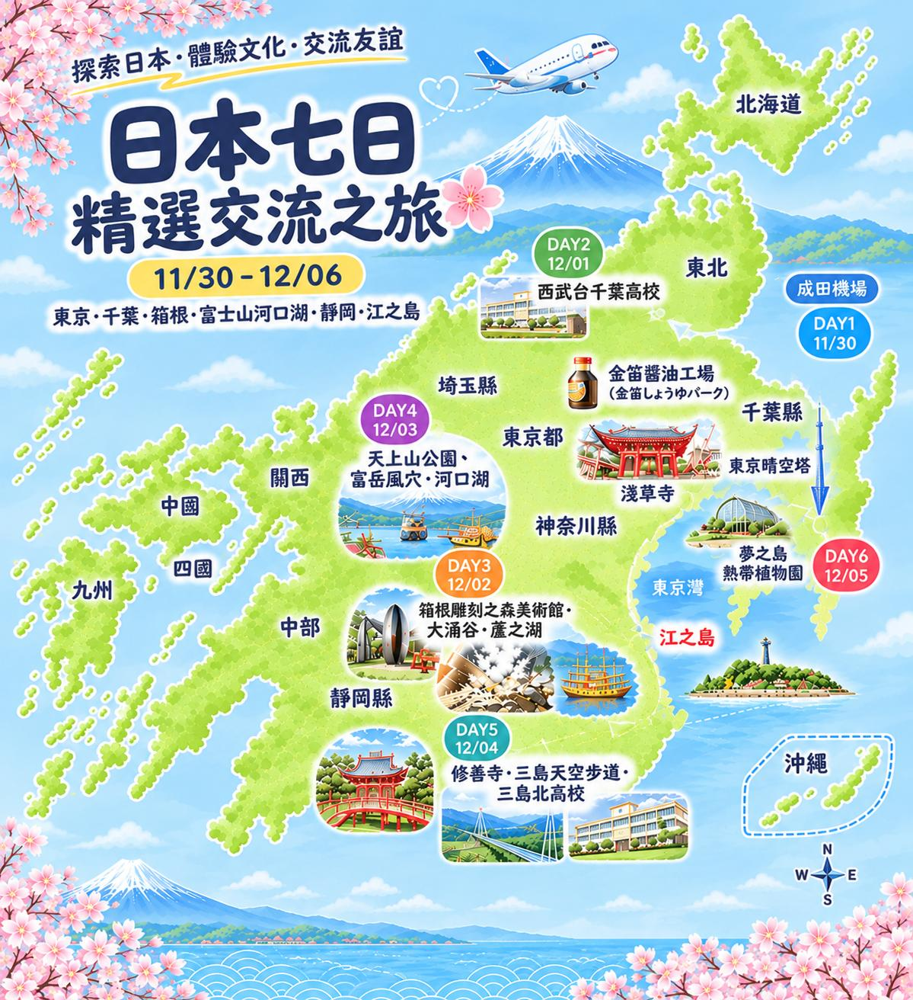

啟程抵日・流山本町文化散策
2026/11/30（一）- 桃園機場CI100 09:30
- 成田國際空港13:30 抵達
- 流山本町《60.3km》江戶回廊散策
- 晚餐《24.4km》
- 飯店《1.4km》野田 Route Inn
從陽明高中搭遊覽車到桃園機場，搭早上 09:30 華航班機抵達東京，下午到千葉縣流山本町，走一段保留江戶時代老街風貌的「江戶回廊」。
| 早餐 | 機上套餐 |
|---|---|
| 午餐 | 機上精緻套餐／點心：壽司＋茶 |
| 晚餐 | 涮涮鍋物料理 |
International Exchange · Japan
臺北市立陽明高中 115 年國際教育旅行交流活動：日本東京七天六夜，2026/11/30（一）–12/06（日）。兩所日本高中交流、一晚御殿場寄宿家庭，加上箱根、富士山河口湖、修善寺、江之島、淺草。內容整理自學校發的《行前手冊》。
建議出發前先存進手機通訊錄。在日本用台灣門號撥日本手機，直接撥 080 開頭號碼即可（漫遊時依電信商規定）。
| 日期 | 航段 | 航空公司 | 班機 | 起飛 | 抵達 | 飛行時間 |
|---|---|---|---|---|---|---|
| 2026/11/30（一） | 台灣桃園 → 成田國際機場 | 中華航空 | CI100 | 09:30 | 13:30 | 3 小時 |
| 2026/12/06（日） | 成田國際機場 → 台灣桃園 | 中華航空 | CI101 | 14:35 | 17:45 | 4 小時 10 分 |
時間都是當地時間。日本比台灣快 1 小時，所以去程看起來 4 小時、其實飛 3 小時；回程看起來 3 小時 10 分、其實飛 4 小時 10 分。
護照效期必須在 2027/5/30 之後（也就是回國日起算 6 個月以上），並攜帶相關簽證。護照不符規定當天就無法出國。
日本東京七天六夜：東京・千葉・箱根・富士山河口湖・靜岡・江之島。

| 晚 | 地區 | 住宿 |
|---|---|---|
| 11/30 | 千葉縣野田市 | 野田 Route Inn |
| 12/01 | 神奈川縣橫濱市 | 橫濱酒店 Mystays |
| 12/02 | 靜岡縣御殿場市 | 寄宿家庭（Homestay） |
| 12/03–12/04 | 靜岡縣御殿場市 | 御殿場 Route Inn |
| 12/05 | 東京都台東區 | Hotel MONday 秋葉原淺草橋 |
《》裡是車程距離。兩天學校交流（D2、D5）和一晚寄宿家庭（D3）是這趟的重點，可以先準備日文自我介紹（見「日文教學」分頁）。
從陽明高中搭遊覽車到桃園機場，搭早上 09:30 華航班機抵達東京，下午到千葉縣流山本町，走一段保留江戶時代老街風貌的「江戶回廊」。
| 早餐 | 機上套餐 |
|---|---|
| 午餐 | 機上精緻套餐／點心：壽司＋茶 |
| 晚餐 | 涮涮鍋物料理 |
到西武台千葉高校體驗日本校園生活，透過交流活動認識不同文化與學習方式，和日本同學一起吃午餐。下午參觀金笛醬油工場，看傳統醬油怎麼做。
| 早餐 | 飯店早餐 |
|---|---|
| 午餐 | 日方招待 |
| 晚餐 | 和風燒烤料理 |
準備 30 秒日文自我介紹、一兩個介紹台灣或陽明的話題（照片、小紀念品）。吃飯前記得說「いただきます」。
早上逛箱根雕刻之森美術館的戶外藝術空間，接著到大湧谷看火山地形、吃有名的黑蛋。午餐後到蘆之湖欣賞湖光山色，再參拜箱根神社，傍晚到御殿場和寄宿家庭會合。
| 早餐 | 飯店早餐 |
|---|---|
| 午餐 | 箱根風味料理 |
| 晚餐 | Homestay 各家庭內用 |
大湧谷是箱根火山噴氣地形，蛋殼變黑是因為溫泉裡的鐵和硫化氫反應。第二次段考地理的火山地形，這裡可以親眼看到。
早上和寄宿家庭道別後，到河口湖天上山公園看富士山和河口湖（上下山都用走的）；接著探訪富岳風穴這個天然熔岩洞穴。下午到富士山世界遺產中心認識富士山的自然與文化，最後到大石公園看季節限定的紅葉。
| 早餐 | Homestay 各家庭內用 |
|---|---|
| 午餐 | 河口湖名物：餺飥麵（ほうとう） |
| 晚餐 | 和風定食料理 |
天上山要步行上下山，請穿好走的鞋。富岳風穴洞內常年低溫，12 月的河口湖早晚很冷，記得帶保暖外套、手套。
早上走修善寺竹林小徑，接著挑戰三島天空步道（日本最長的人行吊橋），從高空看山景。下午到三島北高校和日本學生交流，最後到御殿場 OUTLET 觀察日本商業設施和當地生活。
| 早餐 | 飯店早餐 |
|---|---|
| 午餐 | 與日校餐敘 |
| 晚餐 | 自由選購（餐費 ¥1,500） |
上午逛江之島的海岸風光、江島神社和展望燈塔；下午到淺草觀音寺（淺草寺）走老街；傍晚在晴空塔周邊自由探索，看東京的現代都市樣貌。
| 早餐 | 飯店早餐 |
|---|---|
| 午餐 | 鎌倉風味定食料理 |
| 晚餐 | 自由選購（餐費 ¥1,500） |
自由活動前確認集合時間和地點，結伴行動，隨身帶飯店名片。
到夢之島熱帶植物園看世界各地的熱帶植物，接著前往成田機場搭機回台。
| 早餐 | 飯店早餐 |
|---|---|
| 午餐 | 日式點心／機上套餐 |
| 晚餐 | 溫暖的家 |
共 6 晚。房號、起床、早餐、集合時間每天由領隊公布，可以填在下面的欄位（只存在你這台手機或電腦裡）。
請勿在飯店指定吸菸區以外的地方吸菸；在禁菸客房吸菸，飯店會要求付清潔費。每天出門帶一張飯店名片，迷路時可以拿給計程車或路人看。
| 項目 | 重點 |
|---|---|
| 時差 | 日本比台灣快 1 小時（台灣中午 12:00＝日本下午 1:00）。 |
| 氣候 | 春 10–20°C、夏 25–30°C 多雨、秋 15–25°C、冬 5–10°C，偶爾下雪。這趟在 12 月初，箱根、河口湖等山區早晚會更冷。 |
| 貨幣 | 日圓 ¥。手冊參考匯率：2026 年 11 月約 1 台幣兌 4.83 日圓。不要在街頭換錢，以免拿到假鈔；桃園機場台灣銀行可換日圓。 |
| 電壓插座 | 100V、60Hz，插座和台灣一樣是扁平兩孔的 A Type。三孔插頭要帶轉接頭。 |
| 語言 | 日語（常用招呼語見「日文教學」分頁）。 |
手機上直接輸入 +886（長按 0 會出現 +）再接去掉 0 的號碼，例如打台北 02-1234-5678 就撥 +886-2-1234-5678。日本市話的國際冠碼通常是 010，各公司不同，所以用 + 最不會出錯。
| 日圓 | 約台幣（÷4.83） |
|---|---|
| ¥100 | 約 21 元 |
| ¥500 | 約 104 元 |
| ¥1,000 | 約 207 元 |
| ¥1,500（自由餐費） | 約 311 元 |
| ¥5,000 | 約 1,035 元 |
| ¥10,000 | 約 2,070 元 |
出發前一定要知道的禮儀。
日本餐廳禁帶外食。吃飯前說「我開動了」いただきます（itadakimasu），表示感謝這一餐；吃完說「我吃飽了」ごちそうさまです（gochisosama desu），感謝提供食物。食物不要剩，店家通常不讓客人打包剩菜。多人聚餐時，等所有人的餐都上齊再一起開動。
| 不要這樣做 | 為什麼 |
|---|---|
| 用筷子指人 | 不禮貌 |
| 用筷子互相傳遞、交換食物 | 像喪禮撿骨的動作 |
| 用筷子刺食物 | 不雅觀 |
| 舔、吸筷子 | 不雅觀 |
| 筷子架在碗上 | 不禮貌，有筷架就放筷架 |
| 筷子交叉擺放 | 不吉利 |
日本人很重視隱私。在景點拍照或摸東西前，禮貌地問一聲，例如想拍店內展示時先問店員「請問能拍照嗎？」（写真を撮ってもいいですか？），想摸裝飾品時問「請問能摸嗎？」（触ってもいいですか？）。先問能給人好印象，也能避免麻煩。
在日本會空出電扶梯一側給趕時間的人。關東（東京、橫濱、千葉）是站左邊、空出右側；關西地區則相反。
在日本，刺青常讓人聯想到黑道，很多溫泉仍禁止有刺青的人入場，可能被要求遮住或無法入場，最好先問。和朋友一起泡湯可以聊天，但要壓低音量；禁止潛水、潑水和游泳，大部分溫泉不准攝影。
進湯池前要先在旁邊的淋浴區把身體洗乾淨，毛巾不要放進湯池裡，長頭髮要綁起來。
旅外國人急難救助全球免付費專線 800-0885-0885（諧音「你幫幫我、你幫幫我」），24 小時有專人接聽。無法立即聯絡我國駐外館處時可以撥打。各國撥打方式請查外交部領事事務局網站 boca.gov.tw。
| 用途 | 電話 |
|---|---|
| 旅外國人急難救助全球免付費專線 | 800-0885-0885 |
| 疾管署防疫專線（國外撥打） | +886-800-001922 |
| 隨團領隊（日本手機） | 080-8941-3586 |
| 隨團領隊（台灣手機） | 0937-319-040 |
出國當天才發現不能走就麻煩了。請再確認護照效期（回國日起算 6 個月以上）。以下身分要特別再確認證件：
| 身分 | 要注意什麼 |
|---|---|
| 雙重國籍 | 進出中華民國國境要用同一本護照；在台灣設籍者第一次出國要用中華民國護照出境，並備妥可入出本國境的簽證或護照。 |
| 護照和簽證不在同一本 | 兩本都要帶。 |
| 身分變更 | 身分證和護照上的姓名、身分證字號、生日等不一致，要先處理。 |
| 護照遺失過 | 報失過的護照和簽證就失效了，不能再用，要用新護照出境。 |
每人 1 件，長寬高不超過 23×36×56 公分、總和不超過 115 公分、7 公斤以內，要能放進座椅下方或上方置物櫃。
液狀、膠狀、乳狀物品每瓶不超過 100 毫升，全部放進一個一公升、可重複封口的透明塑膠袋（約 20×20 公分）。
因應非洲豬瘟疫情，入境時攜帶豬肉及各種動物肉製品（豬、魚、雞鴨鵝、牛羊馬等）未依規定申請檢疫，會依「動物傳染病防治條例」處以罰鍰；自疫區帶豬肉製品入境罰台幣 20 萬元以上，無法當場繳清就拒絕入境。日本的肉乾、含肉的泡麵調理包、肉鬆都不要買回來。
| 品項 | 規定 |
|---|---|
| 菸酒（成年人） | 免稅：酒 1 公升，捲菸 200 支或雪茄 25 支或菸絲 1 磅。超過要申報完稅，上限酒 4 公升、捲菸 4 條（800 支）、雪茄 100 支或菸絲 4 磅。 |
| 非處方藥、錠狀膠囊狀食品 | 每種最多 12 瓶（不論盒、罐、條、支），合計不超過 36 瓶。 |
| 電器、名牌商品 | 每人免稅額新台幣 2 萬元，電器未稅超過 2 萬要申報；名牌由海關隨機抽檢。 |
| 容量 | 規定 |
|---|---|
| 裝在手機、相機、手錶、計算機、筆電裡的小、中型鋰電池 | 可以帶 |
| 備用鋰電池、行動電源 100 Wh 以下 | 可放手提行李，每人最多 2 個 |
| 備用鋰電池 100–160 Wh | 要航空公司同意，每人最多 2 個，放手提 |
| 電動輪椅、具保全裝置的設備、可攜式電子醫療設備內的鋰電池 | 每顆電池須符合聯合國《測試和標準手冊》第三部分 38.3 節的測試 |
目前各航空公司嚴禁在飛機上使用行動電源或幫行動電源充電。行動電源要放在座位下方或隨身包包裡，不要放頭頂置物櫃。
勾選會記在你這台裝置上，打包時一項一項勾。
手冊建議帶外套夾克。箱根、河口湖在山區，12 月早晚很冷，建議再加毛帽、手套、圍巾和保暖衣；天上山要走路上下山，穿好走的鞋。
五十音是學日語的基礎，分成平假名（ひらがな）和片假名（カタカナ），兩者發音相同、用法不同：平假名用在一般文字，片假名多用在外來語（例如 テレビ 電視、コーヒー 咖啡）。
| 行／段 | あ段 | い段 | う段 | え段 | お段 |
|---|---|---|---|---|---|
| あ行 | あa | いi | うu | えe | おo |
| か行 | かka | きki | くku | けke | こko |
| さ行 | さsa | しshi | すsu | せse | そso |
| た行 | たta | ちchi | つtsu | てte | とto |
| な行 | なna | にni | ぬnu | ねne | のno |
| は行 | はha | ひhi | ふfu | へhe | ほho |
| ま行 | まma | みmi | むmu | めme | もmo |
| や行 | やya | — | ゆyu | — | よyo |
| ら行 | らra | りri | るru | れre | ろro |
| わ行 | わwa | — | — | — | をo |
| ん | んn | — | — | — | — |
| 行／段 | あ段 | い段 | う段 | え段 | お段 |
|---|---|---|---|---|---|
| あ行 | アa | イi | ウu | エe | オo |
| か行 | カka | キki | クku | ケke | コko |
| さ行 | サsa | シshi | スsu | セse | ソso |
| た行 | タta | チchi | ツtsu | テte | トto |
| な行 | ナna | ニni | ヌnu | ネne | ノno |
| は行 | ハha | ヒhi | フfu | ヘhe | ホho |
| ま行 | マma | ミmi | ムmu | メme | モmo |
| や行 | ヤya | — | ユyu | — | ヨyo |
| ら行 | ラra | リri | ルru | レre | ロro |
| わ行 | ワwa | — | — | — | ヲo |
| ン | ンn | — | — | — | — |
| 中文 | 日文 | 羅馬拼音 |
|---|---|---|
| 早安 | おはようございます | Ohayou gozaimasu |
| 午安（你好） | こんにちは | Konnichiwa |
| 晚安（晚上好） | こんばんは | Konbanwa |
| 謝謝您 | ありがとうございます | Arigatou gozaimasu |
| 初次見面 | はじめまして | Hajimemashite |
| 辛苦了 | お疲れ様でした | Otsukaresama deshita |
| 中文 | 日文 | 羅馬拼音 |
|---|---|---|
| 對不起 | ごめんなさい | Gomen nasai |
| 沒關係 | 大丈夫です | Daijoubu desu |
| 不好意思／請問 | すみません | Sumimasen |
| 再見 | さようなら | Sayounara |
| 請問有這個嗎？ | これはありますか？ | Kore wa arimasu ka? |
| 這個多少錢？ | これはいくらですか？ | Kore wa ikura desu ka? |
| 好吃！ | おいしいです！ | Oishii desu! |
| 請問廁所在哪裡？ | トイレはどこですか？ | Toire wa doko desu ka? |
| 請給我這個 | これをください | Kore o kudasai |
| 請問怎麼去？ | どうやって行きますか？ | Dou yatte ikimasu ka? |
| 請多多指教 | よろしくお願いします | Yoroshiku onegaishimasu |
| 很高興認識你 | はじめまして | Hajimemashite |
| 你好，我叫…… | こんにちは、私は……です | Konnichiwa, watashi wa … desu |
| 你叫什麼名字？ | お名前は何ですか？ | Onamae wa nan desu ka? |
| 今天很開心！ | 今日は楽しかったです！ | Kyou wa tanoshikatta desu! |
| 請等一下 | ちょっと待ってください | Chotto matte kudasai |
| 很漂亮！ | きれいですね！ | Kirei desu ne! |
| 是的 | はい | Hai |
| 不是 | いいえ | Iie |
D2 西武台千葉高校、D5 三島北高校、D3 寄宿家庭都用得到。把「……」換成自己的資料，先念熟。
Hajimemashite.／初次見面。
Watashi wa … desu.／我叫……。
Taiwan kara kimashita.／我從台灣來。
Youmei koukou no ichinensei desu.／我是陽明高中一年級學生。
Shumi wa … desu.／我的興趣是……。
Yoroshiku onegaishimasu.／請多多指教。
| 興趣（填入「趣味は……です」） | 日文 | 拼音 |
|---|---|---|
| 音樂 | 音楽 | ongaku |
| 運動 | スポーツ | supootsu |
| 閱讀 | 読書 | dokusho |
| 動畫 | アニメ | anime |
| 畫畫 | 絵を描くこと | e o kaku koto |
| 打籃球 | バスケットボール | basukettobooru |
| 交流時常用 | 日文 | 拼音 |
|---|---|---|
| 可以一起拍照嗎？ | 一緒に写真を撮ってもいいですか？ | Issho ni shashin o totte mo ii desu ka? |
| 我開動了（飯前） | いただきます | Itadakimasu |
| 謝謝招待（飯後） | ごちそうさまでした | Gochisousama deshita |
| 請再說一次 | もう一度お願いします | Mou ichido onegaishimasu |
| 這是台灣的禮物 | これは台湾のおみやげです | Kore wa Taiwan no omiyage desu |
| 謝謝你，今天很開心 | ありがとう、今日は楽しかったです | Arigatou, kyou wa tanoshikatta desu |
答案：C
答案：B
答案：A
答案：D